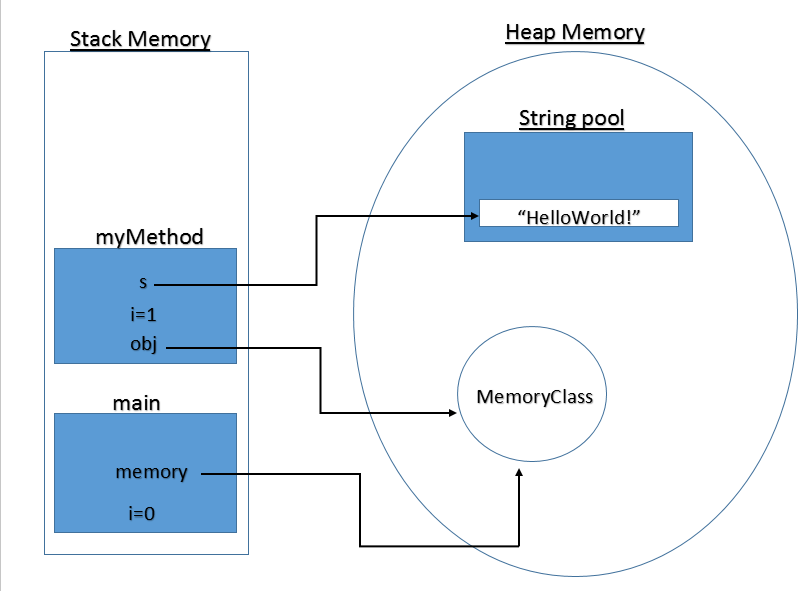
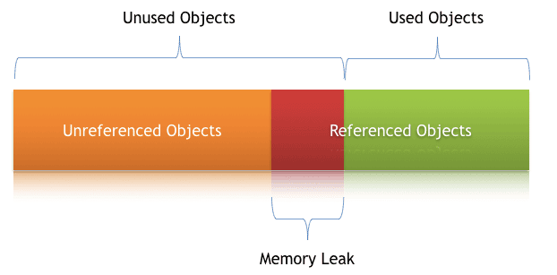

Memory Management and Garbage Collection
Heap and Stack Memory
- To run an application in an optimal way, JVM divides memory into stack and heap memory.
- Whenever we declare new variables and objects, call a new method, declare a String, or perform similar operations, JVM designates memory to these operations from either Stack Memory or Heap Space.

Stack
- Stack Memory in Java is used for static memory allocation and the execution of a thread.
- It contains primitive values that are specific to a method and references to objects referred from the method that are in a heap.
- Access to this memory is in Last-In-First-Out (LIFO) order.
- Whenever we call a new method, a new block is created on top of the stack which contains values specific to that method, like primitive variables and references to objects.
- When the method finishes execution, its corresponding stack frame is flushed, the flow goes back to the calling method, and space becomes available for the next method.
- It grows and shrinks as new methods are called and returned, respectively.
- It’s automatically allocated and deallocated when the method finishes execution.
- If this memory is full, Java throws
StackOverFlowError. - Access to this memory is fast when compared to heap memory.
- This memory is thread-safe, as each thread operates in its own stack.
Heap
- Heap space is used for the dynamic memory allocation of Java objects and JRE classes at runtime.
- New objects are always created in heap space, and the references to these objects are stored in stack memory.
- These objects have global access and we can access them from anywhere in the application.
- We can break this memory model down into smaller parts, called generations, which are:
- Young Generation
- This is where all new objects are allocated and aged.
- A minor Garbage collection (called Minor GC) occurs when this fills up.
- Old or Tenured Generation
- This contains the objects that are long-lived and survived after many rounds of Minor GC.
- When objects are stored in the Young Generation, a threshold for the object’s age is set, and when that threshold is reached, the object is moved to the old generation.
- Usually, garbage collection is performed in Old Generation memory when it’s full.
- Old Generation Garbage Collection is called Major GC and usually takes a longer time.
- Permanent Generation
- This consists of JVM metadata for the runtime classes and application methods.
- Perm Gen objects are garbage collected in a full garbage collection.
- Young Generation
- We can always manipulate the size of heap memory as per our requirement.
- If heap space is full, Java throws
OutOfMemoryError. - Access to this memory is comparatively slower than stack memory
- This memory, in contrast to stack, isn’t automatically deallocated. It needs Garbage Collector to free up unused objects so as to keep the efficiency of the memory usage.
- Unlike stack, a heap isn’t thread safe and needs to be guarded by properly synchronizing the code.
Garbage Collection Mechanisms
- Java Garbage Collection is the process to identify and remove the unused objects from the memory and free space to be allocated to objects created in future processing.
- Garbage collection makes Java memory efficient because because it removes the unreferenced objects from heap memory and makes free space for new objects.
- All the Garbage Collections are “Stop the World” events because all application threads are stopped until the operation completes.
- Since Young generation keeps short-lived objects, Minor GC is very fast and the application doesn’t get affected by this.
- However, Major GC takes a long time because it checks all the live objects and can make the application unresponsive for the garbage collection duration.
- The duration taken by garbage collector depends on the strategy used for garbage collection.
- That’s why it’s necessary to monitor and tune the garbage collector to avoid timeouts in the highly responsive applications.
- Garbage Collections is done automatically by the JVM at regular intervals and does not need to be handled separately.
- It can also be triggered by calling
System.gc(), but the execution is not guaranteed.
Garbage Collector
- The Garbage Collector (GC) collects and removes unreferenced objects from the heap area.
- It is the process of reclaiming the runtime unused memory automatically by destroying them.
- It performs automatic dynamic memory management through the following operations:
- Allocates from and gives back memory to the operating system.
- Hands out that memory to the application as it requests it.
- Determines which parts of that memory is still in use by the application.
- Reclaims the unused memory for reuse by the application.
- It involves the following phases:
- Mark - the GC identifies the unused objects in memory.
- Sweep - the GC removes the objects identified during the previous phase.
- Compact - For better performance, after deleting unused objects, all the survived objects can be moved to be together.
Garbage Collection Types
- Serial GC (
-XX:+UseSerialGC)- Serial GC uses the simple mark-sweep-compact approach for young and old generations garbage collection i.e Minor and Major GC.
- Serial GC is useful in client machines such as simple stand-alone applications and machines with smaller CPU.
- It is good for small applications with low memory footprint.
- Parallel GC (
-XX:+UseParallelGC)- Parallel GC is same as Serial GC except that it spawns N threads for young generation garbage collection where N is the number of CPU cores in the system.
- We can control the number of threads using
-XX:ParallelGCThreads=nJVM option. - Parallel Garbage Collector is also called throughput collector because it uses multiple CPUs to speed up the GC performance.
- Parallel GC uses a single thread for Old Generation garbage collection.
- Parallel Old GC (
-XX:+UseParallelOldGC)- This is same as Parallel GC except that it uses multiple threads for both Young Generation and Old Generation garbage collection.
- Concurrent Mark Sweep (CMS) Collector (
-XX:+UseConcMarkSweepGC)- CMS Collector is also referred as concurrent low pause collector.
- It does the garbage collection for the Old generation.
- CMS collector tries to minimize the pauses due to garbage collection by doing most of the garbage collection work concurrently with the application threads.
- CMS collector on the young generation uses the same algorithm as that of the parallel collector.
- This garbage collector is suitable for responsive applications where we can’t afford longer pause times.
- We can limit the number of threads in CMS collector using
-XX:ParallelCMSThreads=nJVM option.
- G1 Garbage Collector (
-XX:+UseG1GC)- The Garbage First or G1 garbage collector is available from Java 7 and its long term goal is to replace the CMS collector.
- The G1 collector is a parallel, concurrent, and incrementally compacting low-pause garbage collector.
- Garbage First Collector doesn’t work like other collectors and there is no concept of Young and Old generation space.
- It divides the heap space into multiple equal-sized heap regions.
- When a garbage collection is invoked, it first collects the region with lesser live data, hence “Garbage First”.
- The flags define which garbage collection to run for the JVM. For example:
java -XX:+UseSerialGC MyApp. - The default garbage collector used by a JVM depends on the Java version and the platform.
Garbage Collection Monitoring
- We can use the Java command line as well as UI tools for monitoring garbage collection activities of an application.
- We can use
jstatcommand line tool to monitor the JVM memory and garbage collection activities. - The advantage of
jstatis that it can be executed in remote servers too where we don’t have GUI. jvisualvm(command line tool) along with Visual GC plugin allows to see memory and GC operations in GUI.
Garbage Collection Tuning
- The purpose of a garbage collector is to free the application developer from manual dynamic memory management.
- It should be the last option for a developer to should use GC tuning for increasing the throughput of an application and only when there is a drop in performance because of longer GC timings causing application timeout.
- Overall garbage collection tuning takes a lot of effort and time and there is no hard and fast rule for that.
- Java SE selects the most appropriate garbage collector based on the class of the computer on which the application is run. However, this selection may not be optimal for every application.
- Users, developers, and administrators with strict performance goals or other requirements may need to explicitly select the garbage collector and tune certain parameters to achieve the desired level of performance.
Memory Leaks
- A Memory Leak is a situation where there are objects present in the heap that are no longer used, but the garbage collector is unable to remove them from memory, and therefore, they’re unnecessarily maintained.
- One of the core benefits of Java is the automated memory management with the help of the built-in Garbage Collector.
- The GC implicitly takes care of allocating and freeing up memory, and thus is capable of handling the majority of memory leak issues.
- While the GC effectively handles a good portion of memory, it doesn’t guarantee a foolproof solution to memory leaking.
- The GC is pretty smart, but not flawless. Memory leaks can still sneak up, even in the applications of a conscientious developer.
- There might still be situations where the application generates a substantial number of superfluous objects, thus depleting crucial memory resources, and sometimes resulting in the whole application’s failure.
- A memory leak is bad because it blocks memory resources and degrades system performance over time.
- If not dealt with, the application will eventually exhaust its resources, finally terminating with a fatal
OutOfMemoryError. - There are two different types of objects that reside in Heap memory, referenced and unreferenced.
- Referenced objects are those that still have active references within the application, whereas unreferenced objects don’t have any active references.
- The garbage collector removes unreferenced objects periodically, but it never collects the objects that are still being referenced. This is where memory leaks can occur.

Types of Memory Leaks in Java
Memory leaks can occur for numerous reasons. The most common ones are:
Memory Leak Through static Fields
- In Java, static fields have a life that usually matches the entire lifetime of the running application (unless
ClassLoaderbecomes eligible for garbage collection). - If collections or large objects are declared as static, then they remain in the memory throughout the lifetime of the application, thus blocking vital memory that could otherwise be used elsewhere.
- How to prevent this?
- Minimize the use of static variables.
- When using singletons, rely upon an implementation that lazily loads the object, instead of eagerly loading.
Through Unclosed Resources
- Whenever we make a new connection or open a stream, the JVM allocates memory for these resources.
- Forgetting to close these resources can block the memory, thus keeping them out of the reach of the GC.
- This can even happen in case of an exception that prevents the program execution from reaching the statement that’s handling the code to close these resources.
- How to prevent this?
- Always use
finallyblock to close resources. - The code (even in the
finallyblock) that closes the resources shouldn’t have any exceptions itself. - When using Java 7+, we can make use of the
try-with-resourcesblock.
- Always use
Improper equals() and hashCode() Implementations
- When defining new classes, a very common oversight is not writing proper overridden methods for the
equals()andhashCode()methods. HashSetandHashMapuse these methods in many operations, and if they’re not overridden correctly, they can become a source for potential memory leak problems.- ORM tools like Hibernate uses the
equals()andhashCode()methods to analyze the objects and saves them in the cache. - Without proper implementation of these methods, Hash methods and Hibernate wouldn’t be able to compare objects and would fill its cache with duplicate objects.
- How to Prevent It?
- As a rule of thumb, when defining new entities, always override the
equals()andhashCode()methods. - It’s not enough to just override, these methods must be overridden in an optimal way as well.
- As a rule of thumb, when defining new entities, always override the
Inner Classes That Reference Outer Classes
- This happens in the case of non-static inner classes (anonymous classes).
- For initialization, these inner classes always require an instance of the enclosing class.
- Every non-static Inner Class has, by default, an implicit reference to its containing class.
- If we use this inner class’s object in our application, then even after our containing class’s object goes out of scope, it won’t be garbage collected.
- This happens because the inner class object implicitly holds a reference to the outer class object, thereby making it an invalid candidate for garbage collection.
- The same happens in the case of anonymous classes.
- How to Prevent It?
- Migrating to the latest version of Java that uses modern Garbage Collectors such as ZGC that uses root references to find unreachable objects.
- Since the references are found from the root, this will solve the cyclic problem, like the anonymous class holding reference to the container class.
- If the inner class doesn’t need access to the containing class members, consider turning it into a static class.
Through finalize() Methods
- Whenever a class’s
finalize()method is overridden, then objects of that class aren’t instantly garbage collected. - Instead, the GC queues them for finalization, which occurs at a later point in time.
- If the code written in the
finalize()method isn’t optimal, and if the finalizer queue can’t keep up with the Java garbage collector, then sooner or later our application is destined to meet anOutOfMemoryError. - How to Prevent It?
- We should always avoid finalizers.
Interned Strings
- The Java String pool went through a major change in Java 7 when it was transferred from PermGen to Heap Space.
- However, for applications operating on version 6 and below, we need to be more attentive when working with large Strings.
- If we read a massive String object, and call
intern()on that object, it goes to the string pool, which is located in permanent memory, and will stay there as long as our application runs. - This blocks the memory and creates a major memory leak in our application.
- How to Prevent It?
- The simplest way to resolve this issue is by upgrading to the latest Java version, as String pool moved to Heap Space starting with Java version 7.
- If we’re working on large Strings, we can increase the size of the PermGen space to avoid any potential
OutOfMemoryErrors.
Using ThreadLocals
ThreadLocalis a construct that gives us the ability to isolate state to a particular thread, and thus allows us to achieve thread safety.- When using this construct, each thread will hold an implicit reference to its copy of a
ThreadLocalvariable and will maintain its own copy, instead of sharing the resource across multiple threads, as long as the thread is alive. - Despite its advantages, the use of
ThreadLocalvariables is controversial, as they’re infamous for introducing memory leaks if not used properly. ThreadLocals are supposed to be garbage collected once the holding thread is no longer alive.- But the problem arises when we use
ThreadLocals along with modern application servers. - Modern application servers use a pool of threads to process requests, instead of creating new ones (for example, the Executor in the case of Apache Tomcat).
- Since Thread Pools in application servers work on the concept of thread reuse, they’re never garbage collected; instead, they’re reused to serve another request.
- If any class creates a
ThreadLocalvariable, but doesn’t explicitly remove it, then a copy of that object will remain with the worker Thread even after the web application is stopped, thus preventing the object from being garbage collected. - How to Prevent It?
- It’s good practice to clean-up
ThreadLocals when we’re no longer using them. ThreadLocals provide theremove()method, which removes the current thread’s value for this variable.- Don’t use
ThreadLocal.set(null)to clear the value. It doesn’t actually clear the value, but will instead look up the Map associated with the current thread and set the key-value pair as the current thread and null, respectively. - It’s best to consider ThreadLocal a resource that we need to close in a finally block, even in the case of an exception.
- It’s good practice to clean-up
Resources
- https://www.baeldung.com/java-stack-heap
- https://www.digitalocean.com/community/tutorials/java-jvm-memory-model-memory-management-in-java
- https://docs.oracle.com/en/java/javase/21/gctuning/introduction-garbage-collection-tuning.html#GUID-223394DF-2E27-4F5D-A7DF-83151EB577BB
- https://www.baeldung.com/java-memory-leaks